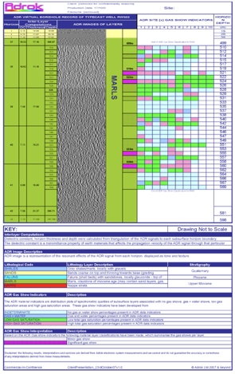
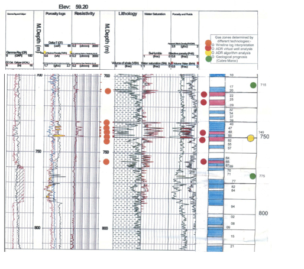
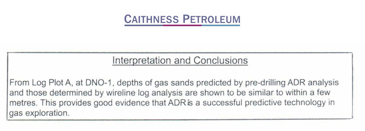

@@include('header.html', {
"level": "third"
})
@@include('section-tabs.html', {
"level": "third"
})
Morocco, North Africa
Oil and Gas fields
Onshore Morocco, thin gas horizons
- Survey Area located in Morocco, North Africa licensed by Caithness Petroleum
- Adrok trained on 3 drilled well locations (for gas & sedimentary rock layer signatures)
- Adrok blind test on 5 locations
- Surface terrain comprised low lying hills and scrubland
- Tortonian sand reservoirs
- Gas horizons were very thin (less than 1m thick).
- Prospect site was 42km offset from training well location
- The results of the Adrok survey were compared to the actual drilling results (Adrok presented results before drilling commenced).
- Adrok produced Virtual borehole log charts
- No HSE accidents


Composite Log comparing ADR Scanner results with Seismic AVO, & down-hole tools showed that ADR gas layer findings (red dots) were more accurately identified than AVO (green dots).
Client Conclusions

@@include('footer.html')